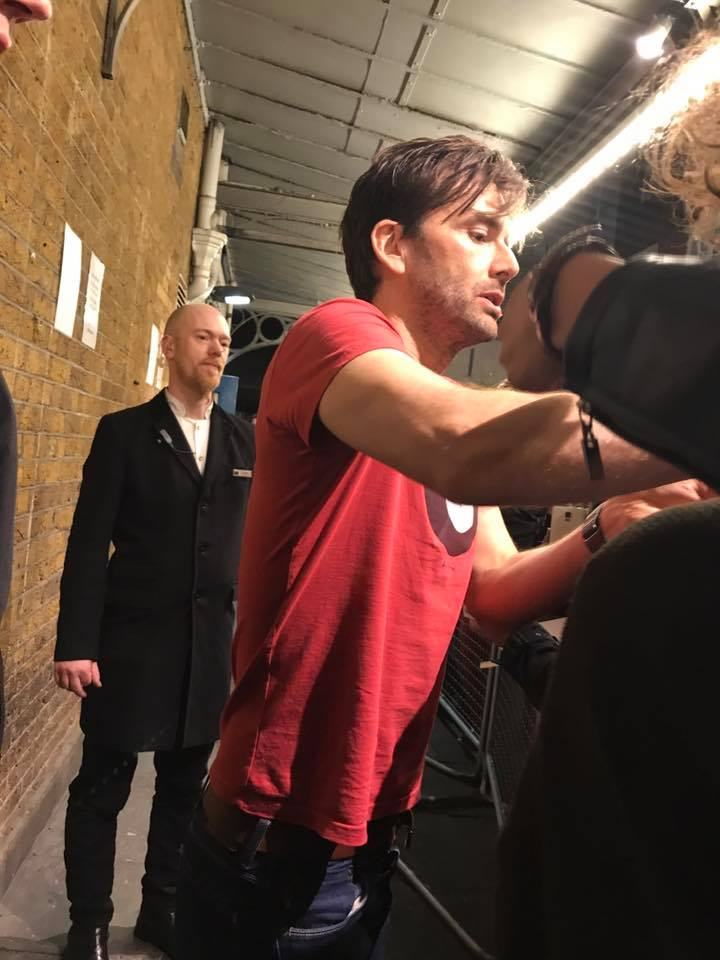

Fun Fact: When I was in London, I got the chance to see not just one, but three different plays with three of my favorite actors. I saw Anthony Stewart Head in Love in Idleness, David Tennant in Don Juan in Soho, and Andrew Scott in Hamlet.


I'm a junior Computer Science and Theology major at the University of Notre Dame, originally from Farmington Hills, MI. In high school, I participated in FIRST Robotics and mentored my local middle school First Lego League team. I recently came back from studying abroad in London, which was the most amazing experience. I hope to return there for graduate school so I can explore the city more and see a play in every West End theatre. In my free time, I compete in hackathons, code with friends, and obsess over Buffy the Vampire Slayer.